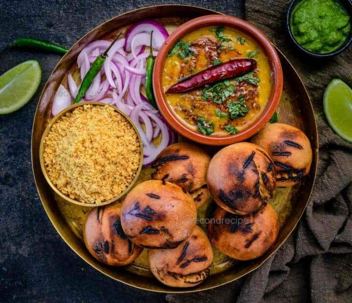

Dal Baati Churma

Description
Dal Baati Churma is a quintessential dish from Rajasthan, India, embodying the essence of traditional Rajasthani cuisine. It consists of three distinct components: dal (lentils), baati (hard, round wheat rolls), and churma (a sweet crumbly mixture). The dal is a hearty and flavorful preparation of lentils—usually a mix of toor, chana, and moong dal—cooked with aromatic spices like cumin, mustard seeds, and turmeric. It is rich, mildly spiced, and serves as a comforting base for the meal. Baati is made by shaping whole wheat dough into balls, baking them until golden and crisp on the outside, and then smothering them in ghee (clarified butter), which enhances their flavor and provides a luscious texture.
Churma adds a sweet finish to the dish, made by crushing baked or fried baati, mixing it with sugar or jaggery, and flavoring it with cardamom and nuts. This trio offers a perfect balance of textures and flavors—savory lentils, crumbly and buttery bread, and the sweet richness of churma. Traditionally served as a communal meal, Dal Baati Churma reflects Rajasthan's heritage of frugality and hospitality, using simple ingredients creatively to make a wholesome and indulgent feast. It is not just a meal but a celebration of flavors and traditions, often enjoyed during festivals and special occasions.
Ingredients
Baatis
- 2 cups whole wheat flour
- ½ cup semolina
- Salt to taste
- 1/2 cup ghee
- Melted ghee as required
Churma
- 2 cups whole wheat flour
- 4 tablespoons semolina
- ½ cup pure ghee + to deep fry + to serve
- 1 cup milk
- ¾ cup powdered sugar
- ¼ teaspoon green cardamom powder
- 10 cashewnuts, chopped
- 10 almonds, chopped
- 10 raisins
Dal
- 2 cups cooked split red lentils (masoor dal)
- 2-3 tablespoons oil
- 2 teaspoons cumin seeds
- 3 green chillies, chopped
- 6-8 garlic cloves, chopped
- 1 tablespoon red chilli powder
- 2 teaspoons garam masala powder
- 1 medium tomato, chopped
- Salt to taste
- Onion rings for serving
- Slit green chillies for serving
Steps
-
Preheat oven to 180° C.
-
To make baatis, take whole wheat flour in a parat. Add semolina, salt, ½ cup ghee and mix well. Add 1¼ cups water knead into stiff dough.
-
Divide the dough into small equal portions and roll into balls and arrange them on a baking tray.
-
Bake them in the preheated oven for 15-20 minutes.
-
Dip the baked baatis in melted ghee and let them soak for 5-10 minutes.
-
To make churma, mix whole wheat flour and semolina in a parat. Add ½ cup melted ghee and mix well.
-
Add milk and knead into a stiff dough.
-
Divide the dough into equal portions and shape into cylinders.
-
Heat sufficient ghee in a kadai and deep-fry the balls on medium heat, till they are golden brown and crisp.
-
Drain on absorbent paper and cool.
-
Transfer in a grinder jar and grind coarsely Add powdered sugar, cardamom powder, cashew nuts, almonds and raisins and mix. The churma is ready.
-
To make dal, heat oil in deep non-stick pan and add cumin seeds.
-
Once they start to change the colour, add green chillies, garlic and sauté for 30 seconds.
-
Add red chilli powder, garam masala powder, tomato and sauté till tomatoes turn soft and pulpy.
-
Add boiled dal, salt, 2 cups water and mix well. Cook on low heat for 5 minutes.
-
Drizzle ghee on dal, baati, churma and serve hot with onion and green chillies.